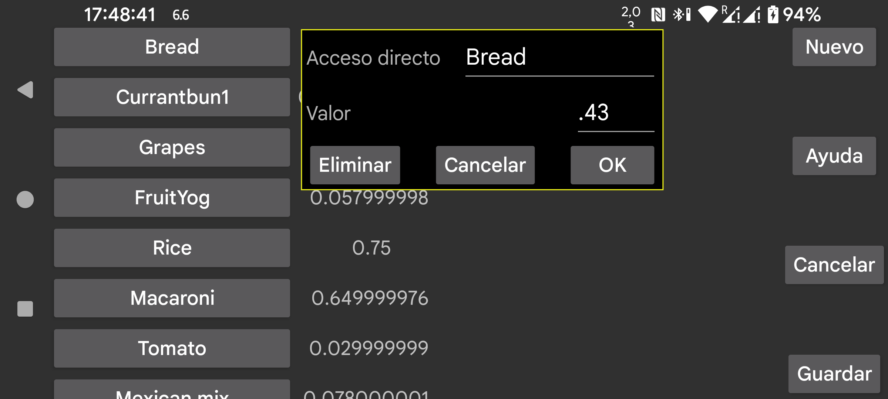

ar be de es fr it nl pl pt ru tr uk uz zh en
Los accesos directos se pueden usar en Kerfstok.
En la pantalla de introducción de números del reloj puedes ir a la pantalla de accesos directos; en mi Vivoactive 3, por ejemplo, se llega deslizando hacia la izquierda. Allí verás una lista de etiquetas; al pulsar una de ellas, se inserta el valor correspondiente en la pantalla numérica. Los valores pueden ser números o operadores aritméticos combinados con números, por ejemplo *0.5 para multiplicar por 0,5.
En este menú de ajustes puedes crear, borrar y editar esos accesos directos.
A la izquierda se muestra una lista de los accesos directos existentes. Después de tocar uno de ellos, aparece una pantalla desde la que puedes borrarlo o cambiar su etiqueta o su valor.
Un acceso directo nuevo se crea con Nuevo.
Los cambios solo se guardan después de pulsar el botón Guardar.